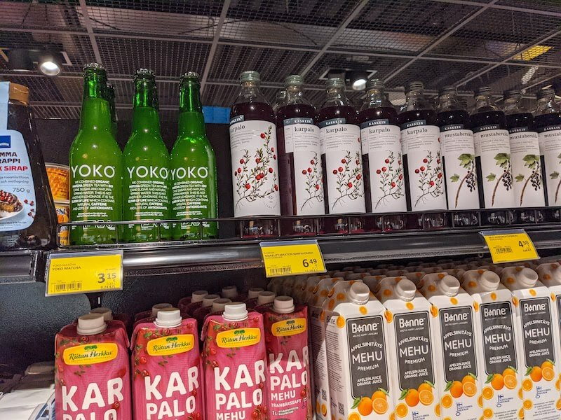

疫情下的芬蘭旅遊 (二)：有聖誕老公公也有瘋狂的芬蘭阿伯
一番功夫終於搭乘英國前往芬蘭的班機，有趣的是，我在搭飛機的時候獲得一個奇怪的知識點，從歐洲飛往英國的飛機上，只要在飛機上不管是購買餐點或是購物，服務人員都會問你要用英鎊還是歐元結帳。
前往芬蘭尋找聖誕老人
抵達芬蘭的旅途就在增加奇怪的知識中度過，飛機一落地往窗外看去一片結冰的路面，很難不意識到自己從稍微冷一點的地方來到超冷的座標，令人瑟瑟顫抖的冷風毫不吝嗇的給予我擁抱。機上每個人都在飛機停泊、安全帶指示燈熄燈的瞬間，用每秒 33 楨影格都跟不上速度完成大衣著裝。

由於芬蘭長年溫度都接近零下，我這次行李包跟背包主要就塞了幾件大衣，因為也要前往北極圈 (Arctic Circle)，在雪地靴子是必備的裝備。為了實現背包客少而輕量的旅遊計畫，其他不可或缺的裝備如下：
- 毛帽 (之前爬玉山買的 Arcteryx 毛帽，這大概是我少數幾個買得起始祖鳥的裝備 😂)
- 全程穿著買的打折踢不爛 (Timberland) 防水靴
- 也建議帶個手套和圍巾 (我在 Dunnes Stores 隨便買的 - Circle scarf & 3M Gloves)
下了飛機，過移民官入境的時候，我拿出了護照跟紙本的 EU COVID Certificate。正想著一切妥當的時候，移民官就開始連環問了我超多問題：
- Are you living in UK? (可能是因為我在英國轉機，當時還擔心因為英國疫情擴散的關係，入境可能會在邊境被邊境官員裁決限制，都要準備掏出快篩報告了)
- No, I am living in …
- What’s the purpose of your visit Finland?
- I am here for tourism and will visit Santa Claus Village. (遞出預先列印好的簡易行程表)
- Where are you going to live?
- I am going to take night train head to Rovaniemi and stay at these places. Here is my reservations. (拿出列印的住宿訂單收據)
- Why you are living in three different hotels?
- Because it closes to Christmas, it is very hard to arrange the same accommodation, especially in Santa Claus village.
- Why are you going to get back to Helsinkin?
- Because the COVID restrictions. I expect to stay in Rovaniemi for just few days, and come back to Helsinkin for doing COVID testing before flying back. My return flight is on Dec 15.
我後來才知道有可能是自己忘記把在其他歐洲國家的居留證拿出來，加上疫情的關係，只拿台灣護照的關係所以問了特別多。總之，就這樣跟移民官聊了幾分鐘，就幫我在護照上蓋章放我通關了。
入境後，映入眼簾的是 Moomin 主題的咖啡廳：

不過第一個覺得很酷的東西是芬蘭真的是很重視環境保育的國家，處處可以觀察到對於資源利用和有水資源的重視 (還有中文….我在 Santa Claus Village 也可以處處看到中文跟會講中文的店員，看來內地遊客也很多)。
而且自從在飯店喝了幾口 Tap Water，認真覺得芬蘭的 Tap Water 很好喝，幾乎跟罐裝寶特瓶水無異了，在機場洗手間還可以看到這樣的告示：
不過在洗手間我們發現了一個很酷的裝置，問著其他一起下飛機有著似乎是澳洲英文口音的旅客，我們都搞不清楚這到底是什麼：
後來才明白他真正的用途是重複利用的擦手布！
因為抵達芬蘭已經是晚上時間，也預計要搭夜班的夜鋪火車一路睡到 Rovaniemi，所以就索性在機場找個地方吃飯。
來到芬蘭真的覺得每個人都好 Nice，芬蘭文和英文的口音也有一種說像是在講精靈語的彈舌節奏感，店員也是隨口問問有沒有 COVID Certificate 但連看都沒看，就忙著招待我們晚上時段還有的食物。
接近盛產鮭魚的北極圈，這裡的鮭魚真的非常好吃，對於熱衷鮭魚的我每一口都停不下來：
Helsinkin 機場裡面也有 24 小時的超商，可以看到一整排的優格和 Karpalo (蔓越莓果汁)

商店裡面各式各樣的東西都有，連整塊的冷凍鮭魚也賣。但令我驚訝的是我在這間店的自助結賬機的時候，覺得他的結帳流程有點讓人困惑。
在結帳得時候提示 Please scan your frequent shopping card，以為是可以直接刷 Debit/Credit Card 結帳了，一直傻傻的拿 Google Pay 刷發現都不過 (這應該是要拿出類似會員卡之類的累積紅利)。結果導致機器還一度因為重試太多次鎖住，一直轉頭請店員 unlock。
(店員心裡大概已經默念一萬遍你這個愚蠢的客人請直接按 No Customer Card 好嗎！)。
最後，我終於成功按下 No Customer Card 才真正導向到結帳流程，結束這場鬧劇。並且在機場時尚的建築稜角和指標尋找到通往地面列車的方向：
芬蘭阿伯
由於前往 Rovaniemi 的火車需要在 Tikkurila 搭乘，從機場接駁到 Tikkurila 是一段很短的車程。在車站等待半夜 12 點搭車的短歇，很快地，我們就迎來預料之外的小插曲。

在車站的椅子上，坐著一名約莫 50-60 歲的阿北，嘴裡喃喃自語的講著我聽不懂的任何一種語言。
他的身體幾經隨著嘴裡的話語搖擺後，前仆後繼的，直接一個充滿綜藝效果的仆街，讓我感受到這名芬蘭阿北對於回歸大地接觸的渴望。
此刻我體悟了芬蘭人對於大地的熱愛投入懷抱，和喝醉酒倒地幾乎是沒有什麼區別。不過，我特別能從這個阿北五體投地的肢體語言中，更為感受到他對於這塊土地的熱愛，雙手抱胸，看似半夢半醒的對著地板說著甜蜜的話語。
這大概是我這輩子在芬蘭聽過表示對大地熱愛最浪漫的情話，雖然我一句都聽不懂，也許帶有幾分醉意，但我能感受到是充滿愛的。
Do you think he is okay?
旁邊的芬蘭阿姨一臉淡定的說：
I think he is crazy.
看來警衛們對於阿北在車站展現這樣的熱情早已是見怪不怪，輕鬆自如的戴上手套，攙扶起阿北，然後阿北就被帶走了。只留下長長的身影和踉蹌的步伐，連衣袖也沒揮的在警衛的牽引下漸行漸遠。